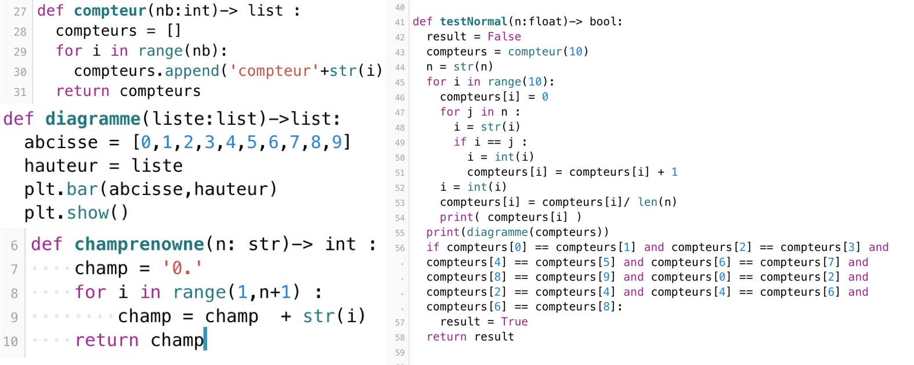

Mon professeur m'avait donné une bonne occupation durant ces vacances d'Automne... J'ai du travailler sur la constante de Champernowne et sur les nombres normaux. Ma question a été : Est-ce que pi est un nombre normal en base 10?
C'est une constante qui est definie de la manière suivante: 0,123456789101112131415... bref vous avez compris qu'on met tout les nombres de 1 à l'infini après 0, et on obtient la constante. On sait que cette constante est un nombre normal donc elle permettait de tester le code.
pi est la valeur de la demie circonférance d'un cercle de rayon 1. Ce nombre permet de nombreuses opérations mathématiques sur les cercles et les angles.
Pas de question debile tel que: "Bah c'est pas un nombre reel?".
En effet un nombre normal est un truc beaucoup plus compliqué. C'est un nombre dont la décimale comporte à la même fréquance un chiffre ou une suite de chiffre. Par exemple, si on prend le nombre 0,1234567809 , il est normal car on trouve une fois chaque nombre dans la décimale et donc la même fréquance pour chaque chiffre. Mais si on avais pris le même nombre sans le 9 a la fin, alors le nombre ne serait plus normal, en effet, le 9 serait présent 0 fois contrairement aux autre présents une fois et donc une fréquance différente.
Donc la base de mon code se deroule en trois grande étapes:
Vous pouvez voir mon code ici:
Le graphique ci-dessous illustre ce qu'on obtient comme probabilité, si le nombre est un nombre normal, alors toutes les barres de l'histogramme font la même hauteur. On observe le diagramme suivant en utilisant le code sur pi grâce à la bibliothèque matplotlib:

Donc pi n'est pas un nombre normal. Ce n'est pas l'intégralité de la recherche mais uniquement le condensé du projet.
Le but de cet algoritme est de chercher un élément dans une liste.
Ici, on parcours chaque élément un à un et si on trouve l'élément cherché, alors on change le booléen en True.

Alors le concept est plus facile à expliquer en shéma donc je vous ai mis un shéma:
qui correspond au code suivant:
Voila, c'est un extrait de notre travail cette année
Retour a la page principale (Celle sur moi) Si vous voulez savoir comment j'ai pu vous livrer ces merveilleux projets...